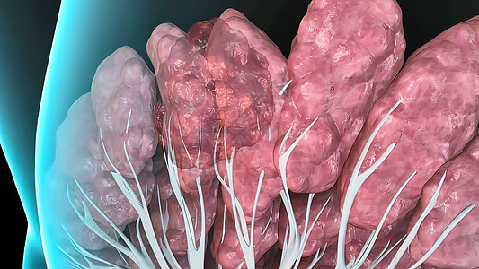
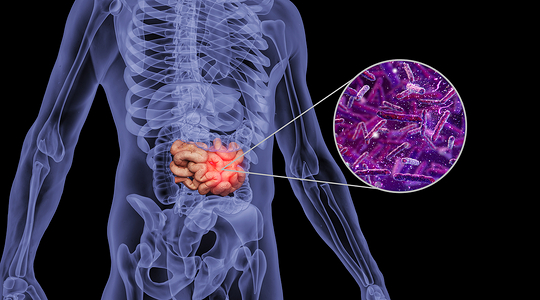

结直肠癌与病理诊断
结直肠癌是全球第三大常见癌症，早期诊断对提升生存率至关重要，早期患者5年生存率超90%，晚期仅约10%。 病理诊断是确诊金标准，通过分析组织样本明确肿瘤类型、分级和分期，为治疗提供依据。 结直肠癌病理组织含正常粘膜、肿瘤组织等多种类型，准确识别对评估肿瘤微环境和预后意义重大，本系统可自动分类这些组织类型，辅助病理学家诊断。


结直肠癌是全球第三大常见癌症，早期诊断对提升生存率至关重要，早期患者5年生存率超90%，晚期仅约10%。 病理诊断是确诊金标准，通过分析组织样本明确肿瘤类型、分级和分期，为治疗提供依据。 结直肠癌病理组织含正常粘膜、肿瘤组织等多种类型，准确识别对评估肿瘤微环境和预后意义重大，本系统可自动分类这些组织类型，辅助病理学家诊断。